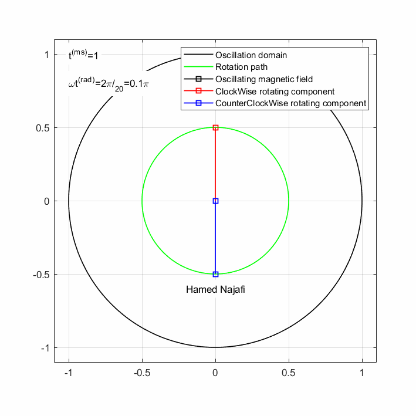

Contents
close all
clear
clc
File Name
gifc = 0 ;
if gifc==1
filename = 'Animated.gif';
end
variables definition:
j=1i;
f=50;
P=1/f;
mp=2;
n=40;
t=linspace(0,mp*P,n);
w=2*pi*f;
Bm=1;
if gifc==1; m=round(sqrt(n))+1; end
Magnetic Fields definition:
Bcw=(Bm/2).*(sin(w*t)-j*cos(w*t));
Bccw=(Bm/2).*(sin(w*t)+j*cos(w*t));
Br=Bccw+Bcw;
Geometrical position and domain
t1=linspace(0,2*P,10*n);
c1=sin(w*t1)+j*cos(w*t1);
c2=0.5*c1;
clear t1
Somthing for creating Animation
if (gifc == 1)
im=cell(m);
frame=struct('cdata',[],'colormap',[]);
end
Openning a Figure
figure('NumberTitle','off','Name','Magnetic Fields in the Stator By H.Najafi','Units','centimeters','Position',[10 1 15 15]);
set(gcf,'color','w');
Animated Lines
for ii=1:n
cla;
plot(c1,'k','LineWidth',1);
hold on;
plot(c2,'g','LineWidth',1);
plot([0 real(Br(ii))],[0 imag(Br(ii))],'k','Marker','s','LineWidth',1);
plot([0 real(Bccw(ii))],[0 imag(Bccw(ii))],'r','Marker','s','LineWidth',1);
plot([0 real(Bcw(ii))],[0 imag(Bcw(ii))],'b','Marker','s','LineWidth',1);
grid on;
axis equal;
axis([-1.1 1.1 -1.1 1.1]);
xticks([-1 -0.5 0 0.5 1])
yticks([-1 -0.5 0 0.5 1])
legend('Oscillation domain','Rotation path','Oscillating magnetic field','ClockWise rotating component','CounterClockWise rotating component');
txt1="t^{(ms)}="+num2str(mp*P/n*ii*1e3);
text(-1,1,txt1,'BackgroundColor',[1 1 1])
txt2="\omegat^{(rad)}="+num2str(ii*mp)+"\pi/_{"+num2str(n/2)+"}"+"="+num2str(w*mp*P/n*ii/pi)+"\pi";
text(-1,0.8,txt2,'BackgroundColor',[1 1 1])
drawnow limitrate;
if (gifc == 1)
frame(ii) = getframe(1);
im{ii} = frame2im(frame(ii));
end
pause(0.01)
end
These following codes are written for exporting plots to a .gif (animation) file
if (gifc == 1)
figure;
nImages=n;
for idx = 1:nImages
subplot(m,m,idx)
imshow(im{idx});
end
for idx = 1:nImages
[A,map] = rgb2ind(im{idx},256);
if idx == 1
imwrite(A,map,filename,'gif','LoopCount',Inf,'DelayTime',0);
else
imwrite(A,map,filename,'gif','WriteMode','append','DelayTime',0);
end
end
close all;
end

The End...